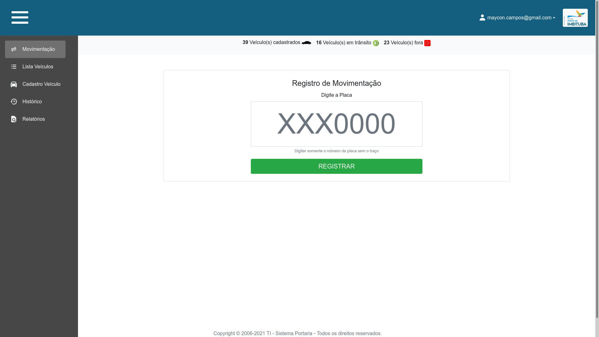

Meus Repositórios Github
x-
Repositório {{key+1}}: {{item.full_name}}
URL: {{item.html_url}}
{{item.description}}
Criado: {{formataData(item.created_at)}} Atualizado: {{formataData(item.updated_at)}} Forked: {{ item.forks_count}}Linguagem: {{ item.language }}
Sobre
Olá, meu nome é Maycon, sou casado, tenho {{idade}} anos, nasci na cidade de Florianópolis e moro na cidade de {{ location }} desde 2015.
Apesar de sempre ter sido ligado à tecnologia utilizando e explorando computadores desde a pré-adolescência, decidi dar o primeiro passo e iniciei meus estudos pra valer em tecnologia no início de 2019. Meu primeiro contato com linguagem e lógica de programação foi ao assistir as aulas fantásticas do canal Curso em Vídeo no Youtube, com o curso de Python Fundamentos (Módulos 1, 2 e 3) do prof. Gustavo Guanabara.
O segundo passo que dei foi a instalação do Sistema Operacional Linux como sistema de utilização principal, instalando-o pela primeira vez em meu computador em Julho de 2019. Desde então venho estudando sobre este sistema maravilhoso, bem como tudo que é relacionado a Software Livre, distribuições linux, utilização do terminal Linux, Shell Script, gerenciadores de pacotes, permissões de acesso, manipulação de arquivos e diretórios, system inits (systemd, sys v-init), Desktop Enviroments do Linux (KDE Plasma, Gnome, XFCE, LMDE, LxQT, etc...), etc.
Foi através do estudo autodidata que adquiri conhecimento sobre as mais diversas linguagens e tecnologias, porém senti que seria hora de me aprofundar mais e escolher um caminho. Então no início de 2020 resolvi iniciar o curso Superior em Análise e Desenvolvimento de Sistemas, pelo {{ universidade }}. Tudo isto afim de prover minha formação e construir uma base sólida de conhecimentos.
Abaixo segue uma lista de tecnologias as quais já estudei por meios autodidatas e também por intermédio da Universidade.
- {{ item }}
Preferência pelo Desenvolvimento Web - Front e Backend
No entanto, desde meu primeiro projeto profissional Web com PHP, venho me identificando e centrando bastante meus estudos para o ramo de Desenvolvimento Web.
Curso Superior - Graduação
Centro Universitário de Maringá - Unicesumar
Superior em Análise e Desenvolvimento de SistemasCarga Horária – 2412 horas
Início – Fevereiro de 2020 – Previsão de conclusão - Julho de 2022
Curso Técnico de Capacitação
SESC/SENAI - Serviço Nacional de Aprendizagem Industrial
Curso - DEVinHouse[ConectaNuvem]Tecnologias: HTML5, CSS3, JavaScript, POO, VueJS, Python, Flask, SQL e NoSQL, Scrum, DevOPS, Virtualização (Containers, Docker e Kubernetes)
Carga Horária – 900 horas
Início – Fevereiro de 2022 – Previsão de conclusão - Novembro de 2022
Cursos Extra Curriculares
Data Science Academy
Curso - Big Data Fundamentos 3.0Carga Horária – 12 horas
Concluído em – 14 Outubro de 2021
Certificado
Node Studio
PHP Orientado a ObjetosCarga Horária – 2 horas
Concluído em – 13 Agosto de 2021
Certificado
Curso em Vídeo
Curso de Python 3 - Mundo 1 - FundamentosCarga Horária – 40 horas
Concluído em – 30 Julho de 2021
Certificado
Curso em Vídeo
Curso de MySQL - FundamentosCarga Horária – 40 horas
Concluído em – 29 Janeiro de 2021
Certificado
Curso em Vídeo
Curso de JavaScript - FundamentosCarga Horária – 40 horas
Concluído em – 06 Novembro de 2020
Certificado
Curso em Vídeo
Curso de HTML e CSS - Módulo 1 de 5Carga Horária – 40 horas
Concluído em – 21 Janeiro de 2021
Certificado
Celke Cursos
Curso de PHP, MySQLi e Bootstrap4Carga Horária – 100 horas
Concluído em – 01 Abril de 2022
Certificado
Digital Innovation One
Arquitetura de Sistemas avançadoCarga Horária – 3 horas
Concluído em – 15 Outubro de 2021
Certificado
Digital Innovation One
Conceitos e melhores práticas com bancos de dados PostgreSQLCarga Horária – 9 horas
Concluído em – 26 Outubro de 2021
Certificado
Digital Innovation One
Formulários com condicionais e Sessões com PHPCarga Horária – 5 horas
Concluído em – 19 Setembro de 2021
Certificado
Digital Innovation One
Fundamentos de Arquitetura de SistemasCarga Horária – 6 horas
Concluído em – 15 Outubro de 2021
Certificado
Digital Innovation One
Introdução a orquestração de conteineres com DockerCarga Horária – 4 horas
Concluído em – 17 Outubro de 2021
Certificado
Digital Innovation One
Introdução a Git e GithubCarga Horária – 5 horas
Concluído em – 27 Setembro de 2021
Certificado
Digital Innovation One
Introdução ao MongoDB e bancos de dados NoSQLCarga Horária – 6 horas
Concluído em – 03 Novembro de 2021
Certificado
Digital Innovation One
Introdução a programação com PythonCarga Horária – 8 horas
Concluído em – 05 Novembro de 2021
Certificado
Digital Innovation One
Linux: A introdução ao Sistema OperacionalCarga Horária – 10 horas
Concluído em – 13 Outubro de 2021
Certificado
Digital Innovation One
Shell Script: Manipulando ArquivosCarga Horária – 2 horas
Concluído em – 13 Outubro de 2021
Certificado
Digital Innovation One
Explorando o poder do NoSQL com Cassandra e DBaseCarga Horária – 4 horas
Concluído em – 03 Novembro de 2021
Certificado
Experiência no ramo de T.I
Estágio de Suporte em T.I
Empresa: SCPar - Porto de ImbitubaMaio de 2021 – Presente
Atribuições do cargo:
- {{ item }}
Projeto de Estágio - Controle de Entrada e Saída de Veículos
Julho de 2021 – Agosto de 2021Descrição do projeto
Tudo começou no dia que fomos atender a um chamado na portaria 1, onde um computador reiniciava todas as vezes em que o usuário abria a planilha excel a qual fazia todo o controle de entrada e saída de veículos. Verificamos que a planilha já se encontrava com 100 mil linhas e já ocupava em torno de 100mb do disco rígido do computador. Imaginei que se houvesse um sistema utilizando banco de dados relacional seria bem melhor, então meu gestor me desafiou a escrever este sistema. Mas ele queria que fosse escrito em PHP, Bootstrap, e que utilizasse bancos de dados MySQL. Nunca havia escrito nada em PHP, então imediatamente comecei a estudar esta linguagem e duas semanas depois iniciei o projeto. Sendo este meu primeiro projeto de utilização profissional de minha carreira.
Backend e parte do Frontend: {{ nome }} - Estagiário
Frontend Revisão e melhorias: Giovani Machado - Estagiário
- Paradigma: Estruturado
- Framework: Nenhum
- PHP 7
- Bootstrap 4
- CSS 3
- Banco de Dados MySQL
- Github Projeto
Tecnologias Utilizadas
Projetos Pessoais em Python
Projeto OS Fácil v1.0
Março 2020 – Abril 2020Descrição do projeto
Este pequeno projeto infelizmente não possuo o print da tela, mas felizmente não tinha muito o que mostrar, pois ele funcionava em um Menu em Loop infinito pelo terminal. O programa foi batizado de OS Fácil por ter me servido para resolver um problema real de meu dia a dia. Eu tinha uma estamparia de sublimação e nas épocas de movimento, quando surgiam muitas ordens de serviço, todas as anotações eram feitas em papel, e muitas informações se perdiam.
Então foi aí que tive a ideia de escrever este programa em Python pra rodar pelo terminal e utilizando como bancos de dados o SQlite3.
- Paradigma: Estruturado
- Linguagem: Python
- Banco de Dados: SQlite3
- Gerava arquivos TXT's com a Ordem de Serviço para impressão.
- Github Projeto
Tecnologias Utilizadas
Projeto OS Fácil v2.0
Junho 2020 – Junho 2020Descrição do projeto
Esta foi a segunda versão do OSFácil, mas desta vez utilizando interface gráfica com a biblioteca padrão de Python, Tkinter. O programa seguiu os mesmos princípios da primeira versão, mas melhorado.
- Paradigma: POO
- Linguagem: Python
- Banco de Dados: SQlite3
- Gerava arquivos PDF para impressão das Ordens de Serviço. (Biblioteca: Reportlab)
- Github Projeto
Tecnologias Utilizadas
Projeto OS Fácil v3.0
Agosto 2020 – Setembro 2020Descrição do projeto
Este programa foi a evolução das duas primeiras versões OS Fácil.
Assim como na segunda versão, esta foi reescrita do zero, mas desta vez utilizando a biblioteca gráfica PyGTK3 e seu construtor de interfaces sensacional chamado Glade. O programa continuou contando com banco de dados SQlite3 e o gerador de PDF pra impressão das Ordens de Serviço.

- Paradigma: POO
- Linguagem: Python 3.8.5 64bits
- Banco de Dados: SQlite3
- Biblioteca gráfica: PyGTK3
- Construtor de Interface: Glade 3.36
- Gerador de PDF: Biblioteca Reportlab
- Github Projeto
Tecnologias Utilizadas
Projeto Controle de Gastos
Julho 2020 – Julho 2020Descrição do projeto
A ideia deste projeto surgiu, pois estava procurando por opções de programas de gerenciamento financeiro, mas não estava me adaptando com aqueles disponíveis Open Source, que na verdade são ótimos, mas eu achava um pouco complicado de utilizar. Então resolvi escrever um gerenciador que fosse simples e direto ao ponto. As contas eram dispostas em Abas, Entrada, Saída e balanço dos gastos. Eram listadas todas as contas do mês, na virada a lista era zerada restando apenas o total daquele mês que passou e um relatório pra consultas posteriores.
- Paradigma: POO
- Linguagem: Python 3.8.5 64bits
- Banco de Dados: SQlite3
- Biblioteca gráfica: Tkinter
- Gráficos: Biblioteca Matplotlib
- PDF: Biblioteca Reportlab
- Github Projeto
Tecnologias Utilizadas
Projeto Gerenciador de Aluguéis
Setembro 2020 – Outubro 2020Descrição do projeto
Este programa nasceu da necessidade em gerenciar os contratos de locação que administramos aqui no prédio. Havia certa dificuldade de manter de forma manual os dados de cada locação, bem como controlar datas de pagamento de aluguel, caução, vencimentos de contrato e tudo mais. Seguindo a evolução dos estudos, escrevi este programa em Python, utilizando a biblioteca gráfica padrão Tkinter e bancos de dados SQlite3.
- Paradigma: POO
- Linguagem: Python 3.8.5 64bits
- Banco de Dados: SQlite3
- Biblioteca gráfica: Tkinter
- Gerador de PDF: Biblioteca Reportlab
- Github Projeto
Tecnologias Utilizadas
Projetos Pessoais em PHP
Projeto Controle de Finanças v1.0
Julho 2021 – Julho 2021Descrição do projeto
Trata-se da segunda versão do Gerenciador de gastos que nasceu primeiro em Python. Agora eu já estava estudando desenvolvimento web com PHP e descobrindo a fantástica interação do Frontend com o Backend e a mágica que as tags <?php?> podem fazer dentro do documento html.
Nesta segunda versão tratei de seguir a mesma simplicidade do primeiro programa, mas como no desenvolvimento web as coisas são mais simples de se fazer, acabou que o programa ficou mais completo.
Coloquei sistema de Login com confirmação por email, entre outras funcionalidades legais. Mas o estilo de listar somente os gastos do mês corrente na tabela principal de gastos eu mantive.
- Paradigma: Estruturado
- Linguagem: PHP7
- Banco de Dados: MySQL biblioteca MySQLi
- Servidor: Apache (The Apache HTTP Server)
- Framework: Bootstrap4
- Github Projeto
Tecnologias Utilizadas
Gerenciador de Contratos de Aluguéis v2.0
Agosto 2021 – Agosto 2021Descrição do projeto
Esta foi a segunda versão do Gerenciador de Contratos inicialmente escrito em Python, mas que agora foi reescrito do zero seguindo o mesmo flow do antigo aplicativo.
A ideia foi separar as entidades como: Locador (Dono do imóvel), Locatário: (Quem aluga) e os imóveis. A modelagem do banco dados partiu daí. O usuário inicialmente cadastra o nome do imóvel e o nome do locador, então quando houvesse um contrato de aluguel, selecionamos um locador, um locatário, um imóvel e fechamos um contrato. Ali podemos também escolher sobre pagamento de caução, se o contrato sendo fechado é curto (6 meses) ou anual bem como o dia do mês melhor para pagamento do aluguel e, como não deveria faltar, pode-se escolher também qual mês começaria a pagar o aluguel. Ao selecionar estes dados o sistema dispara um laço de repetição gerando as parcelas de meses subsequentes e insere tudo isto no banco de dados de forma automatizada.
Foi implementado também a lista das parcelas pagas/a vencer/ atrasadas, bem como emissão de recibo com preenchimento automático do valor por extenso.
- Paradigma: Estruturado
- Linguagem: PHP7
- Banco de Dados: MySQL biblioteca MySQLi
- Servidor: Apache (The Apache HTTP Server)
- Framework: Bootstrap4
- Github Projeto
Tecnologias Utilizadas
Gerenciador Controle de Finanças v2.0
Setembro 2021 – Setembro 2021Descrição do projeto
Esta foi a segunda versão do Gerenciador de Finanças, mas escrito do zero e totalmente remodelado. Agora resolvi escrever com paradigma Orientado a Objetos pra fixar conhecimentos e brincar com as bibliotecas em php pra manipulação do banco de dados com a classe PDO.
- Paradigma: POO
- Linguagem: PHP7
- Banco de Dados: MySQL com biblioteca PDO
- Servidor: Apache (The Apache HTTP Server)
- Framework: Bootstrap4 e CSS3
- Github Projeto